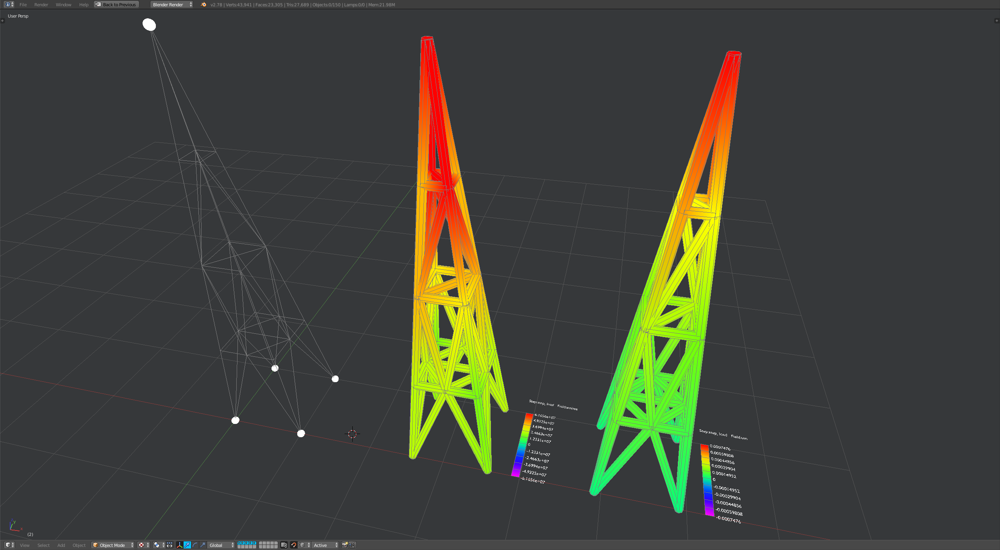

truss_tower
This example works for: Abaqus.

from compas_fea.cad import blender
from compas_fea.structure import ElasticIsotropic
from compas_fea.structure import ElementProperties as Properties
from compas_fea.structure import GeneralStep
from compas_fea.structure import PinnedDisplacement
from compas_fea.structure import PointLoad
from compas_fea.structure import Structure
from compas_fea.structure import TrussSection
__author__ = ['Andrew Liew <liew@arch.ethz.ch>']
__copyright__ = 'Copyright 2018, BLOCK Research Group - ETH Zurich'
__license__ = 'MIT License'
__email__ = 'liew@arch.ethz.ch'
# Structure
mdl = Structure(name='truss_tower', path='C:/Temp/')
# Elements
blender.add_nodes_elements_from_layers(mdl, line_type='TrussElement', layers='elset_truss')
# Sets
blender.add_nsets_from_layers(mdl, layers=['nset_pins', 'nset_top'])
# Materials
mdl.add(ElasticIsotropic(name='mat_elastic', E=200*10**9, v=0.3, p=7850))
# Sections
mdl.add(TrussSection(name='sec_truss', A=0.0001))
# Properties
mdl.add(Properties(name='ep_truss', material='mat_elastic', section='sec_truss', elset='elset_truss'))
# Displacements
mdl.add(PinnedDisplacement(name='disp_pinned', nodes='nset_pins'))
# Loads
mdl.add(PointLoad(name='load_top', nodes='nset_top', x=2000, y=1000, z=-100000))
# Steps
mdl.add([
GeneralStep(name='step_bc', displacements='disp_pinned'),
GeneralStep(name='step_load', loads='load_top'),
])
mdl.steps_order = ['step_bc', 'step_load']
# Summary
mdl.summary()
# Run
mdl.analyse_and_extract(software='abaqus', fields=['u', 'cf', 'rf', 'sf', 's'])
# blender.plot_data(mdl, step='step_load', field='um')
# blender.plot_data(mdl, step='step_load', field='smises')
# blender.plot_reaction_forces(mdl, step='step_load', scale=0.05)
# blender.plot_concentrated_forces(mdl, step='step_load', scale=0.05)
# Print results
print(mdl.get_nodal_results(step='step_load', field='um', nodes='nset_top'))
print(mdl.get_nodal_results(step='step_load', field='rfm', nodes='nset_pins'))